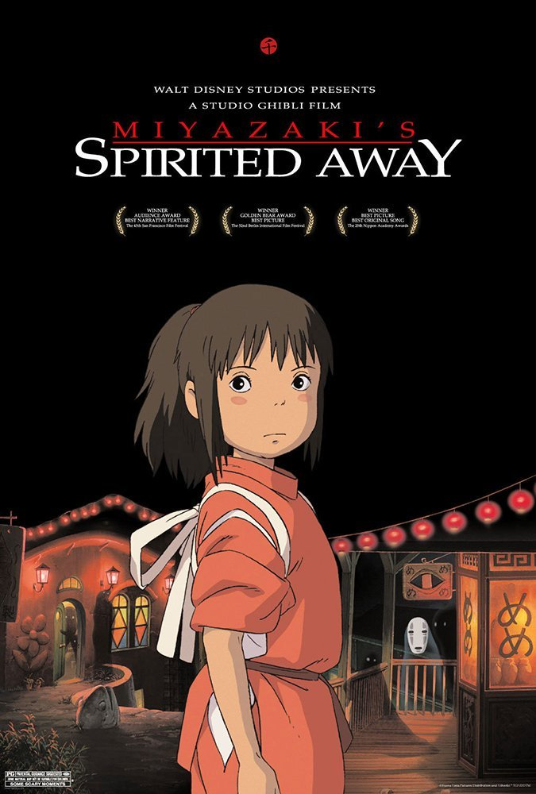
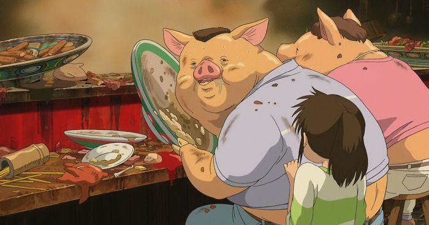

Spirited Away is a 2001 Japanese animated fantasy film written and directed by Hayao Miyazaki. It was produced by Toshio Suzuki, animated by Studio Ghibli, and distributed by Toho. The film stars Rumi Hiiragi, alongside Miyu Irino, Mari Natsuki, Takashi Naito, Yasuko Sawaguchi, Tsunehiko Kamijō, Takehiko Ono, and Bunta Sugawara. It follows a young girl named Chihiro "Sen" Ogino, who moves to a new neighborhood and inadvertently enters the world of kami (spirits of Japanese Shinto folklore). After her parents are turned into pigs by the witch Yubaba, Chihiro takes a job working in Yubaba's bathhouse to find a way to free herself and her parents and return to the human world.
Spirited Away is based on an ancient polytheistic Japanese religion called Shintoism, meaning “way of the Gods” in Japanese. Shinto has been a major influence to Japanese culture since ancient times. Even today, the religion has a large following in Japan with over 100 million people. Two of the main aspects of Shintoism are harae, or cleanliness, and worship of ancestors and spirits, called kami. When a loved one dies, they are believed to continue living on as a spirit, protecting their living descendants. Shrines are built to honor these ancestors. In addition to spirits of ancestors, anything in the natural world, whether it’s animate or inanimate, has a spirit in Shintoism. There are kami for objects such as rivers, the Sun, trees, and mountains. Examples of kami in Spirited Away include Haku (a river kami) and the radish spirit. Even the soot leftover from coal in Spirited Away have spirits.
In Shinto, there is a belief called kamikakushi, which is the death or disappearance of a person after they have upset kami. Kamikakushi literally translates to “Spirited Away.” in Japanese. In fact, the Japanese title of the movie is “Sen and Chihiro’s Kamikakushi.” In the beginning of the film, both Chihiro and her parents experience kamikakushi after her parents eat the kamis’ food. As punishment, the parents are turned into pigs and all three of them are banished to the spirit world. Kamikakushi is mostly relevant in Shinto mythology as opposed to real-life practices, so it makes a great plotline for one of Miyazaki’s otherworldly films.
If you have ever been to Japan or are familiar with its culture, you might have noticed their emphasis on cleanliness and avoiding contamination. It is commonplace for sick people to wear masks (even before the pandemic), shoes are almost always taken off in the home, and taxi doors are opened automatically to avoid touching them. This is because of harae and Shinto’s significant influence on Japanese culture. Harae connects to the movie as most of it takes place in a bathhouse. In the more modern forms of Shinto, there is also an emphasis on protecting the environment from climate change. Throughout the movie, the bathhouse is faced with multiple “attacks” of contamination. When the main character, Chihiro, first entered the spirit world, the residents were offended by her human scent and avoided her as much as possible, fearing her stench would contaminate their surroundings. Later on in the movie, when a river spirit that was severely affected by pollution enters the bathhouse wanting to get cleaned, again, the bathhouse residents tried their hardest to avoid contamination by him and tasked Chihiro with taking care of him. The river spirit had so much garbage attached to him, that it was confused for a stink spirit by the residents. This scene is also an example of modern Shinto’s emphasis on protecting the environment. Like most other places around the world, Japan’s rivers are extremely polluted (such as the Yamata river), and it has been a prominent social issue in Japan for decades.
Spirited Away is known for its bright and cheerful art, especially when it comes to its architecture. Based on the Edo Tokyo Museum, the bathhouse shares many similar features. Visiting the museum often, Miyazaki viewed it as a magical safe haven. When asked in an interview where his vision for the bathhouse being a place for the gods came from, he said: “It’s the same as when we go to hot springs. Japanese gods go there to rest… I was imagining such things as I made images (of the film).” In Japanese Architecture, there are eight elements that make it distinct from other architecture. Some of these elements include: wood, roofs, engawa, and a relationship with nature. The edges of roofs in Japanese architecture are traditionally more dramatically extended over the edge. They are designed this way because of the intensity of Japan’s summer rainy season, to protect windows from the rain.

Movie Poster

The parents experience Kamikakushi and turn into pigs after eating the kamis' food

The bathhouse